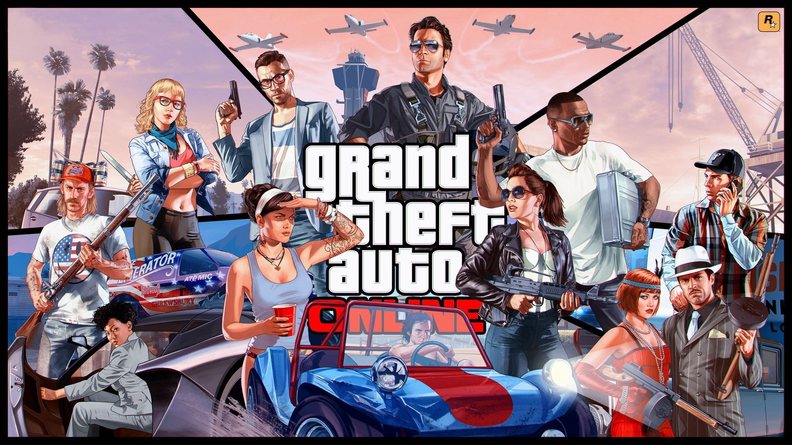
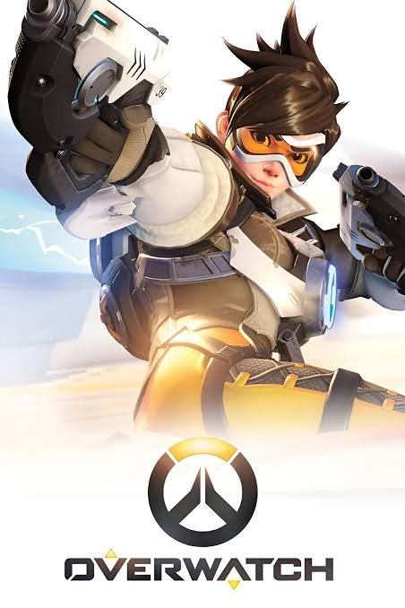

My Favorite Games Collection
This is my curated collection of games that I love and enjoy playing. Each game represents something I enjoy, whether it's the creativity and roleplay of Grand Theft Auto V/FiveM, the competitive action of Deadlock and Overwatch, or the characters and worlds of The Sims 4, Marvel Rivals, and Infinity Nikki. This collection showcases some of my favorite games while also demonstrating how responsive design allows me to organize and display my content across different screen sizes.

Grand Theft Auto V / FiveM
Game | 2013 | ROckstar Games
Grand Theft Auto V and FiveM are some of my favorite games because of the freedom and creativity they offer. I especially enjoy the roleplay aspect of FiveM, where I can create characters, interact with other players, and experience different stories. There is always something new to do, which makes it a game I can keep coming back to.

Deadlock
Game | Valve
Deadlock is one of my favorite games because of its fast-paced gameplay and unique combination of third-person shooting and strategy. I enjoy learning the different characters, figuring out which abilities work best together, and improving as I play. Every match feels different, which keeps the game interesting.

Overwatch
Game | 2016 | Blizzard Entertainment
Overwatch is one of my favorite games because of its colorful characters and team-based gameplay. I enjoy being able to choose different heroes depending on how I want to play. The combination of abilities, teamwork, and fast-paced matches makes every game feel exciting.

The Sims 4
Game | 2014 | Electronic Arts
The Sims 4 is one of my favorite games because it lets me be creative and build my own stories. I enjoy creating Sims, designing houses, decorating rooms, and deciding how my characters live their lives. The amount of customization makes it easy to spend hours creating something new.

Marvel Rivals
Game | 2024 | NetEase Game
Marvel Rivals is one of my favorite games because it combines superhero characters with fast-paced multiplayer gameplay. I enjoy playing different Marvel characters and learning how their abilities work together. The character designs, abilities, and team combinations make every match fun and unpredictable.

Infinity Nikki
Game | 2024 | Infold Games
Infinity Nikki is one of my favorite games because of its beautiful world, fashion, and relaxing gameplay. I love exploring the different areas, collecting outfits, and discovering new things throughout the world. The combination of exploration, creativity, and fashion makes it stand out from the other games I play.